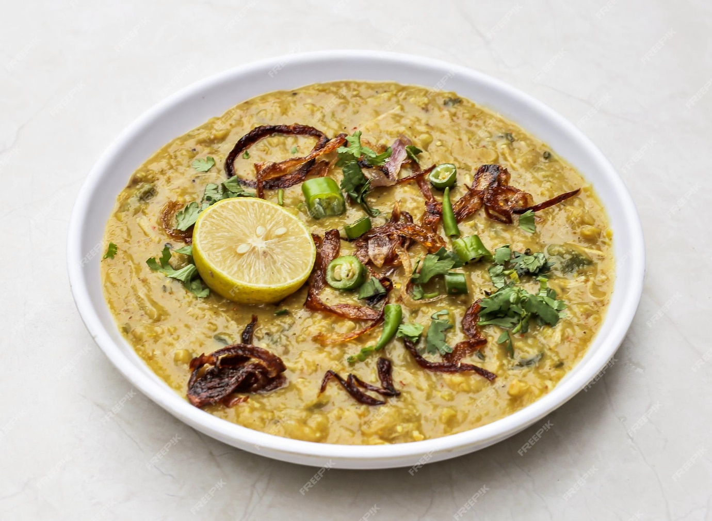

Haleem

Description
A hearty and nutritious dish made with meat, lentils, and grains, slow-cooked to a rich and creamy consistency,
traditionally enjoyed during Ramadan.
Ingredients
- 500g boneless mutton or beef
- 1 cup broken wheat
- 1/2 cup chana dal (split chickpeas)
- 1/2 cup urad dal (split black gram)
- 1/2 cup toor dal (pigeon peas)
- 2 onions (sliced)
- 4 green chilies
- 2 tbsp ginger-garlic paste
- 1 cup yogurt
- 2 tsp turmeric powder
- 2 tsp red chili powder
- 1 tsp garam masala
- 1 tsp black pepper powder
- 1/2 cup fresh coriander leaves (chopped)
- 1/2 cup fresh mint leaves (chopped)
- 4 tbsp ghee or oil
- 4 cups water
- Salt to taste
- Fried onions (for garnish)
- Lemon wedges (for serving)
Steps
- Rinse and soak the broken wheat and lentils together for 30 minutes.
- In a large pot, heat ghee or oil and fry the sliced onions until golden brown. Remove and set aside.
- In the same pot, add the ginger-garlic paste and sauté until fragrant.
- Add the mutton or beef and cook until browned.
- Mix in the yogurt, turmeric powder, red chili powder, and salt. Cook for 10 minutes.
- Add the soaked broken wheat and lentils to the meat mixture.
- Pour in the water, bring to a boil, then reduce heat and simmer until the meat and grains are tender and the
mixture thickens, stirring occasionally.
- Use a hand blender to blend the mixture to a smooth consistency.
- Stir in garam masala, black pepper powder, chopped coriander, and mint leaves.
- Cook for another 15-20 minutes on low heat, stirring frequently.
- Garnish with fried onions and serve hot with lemon wedges.